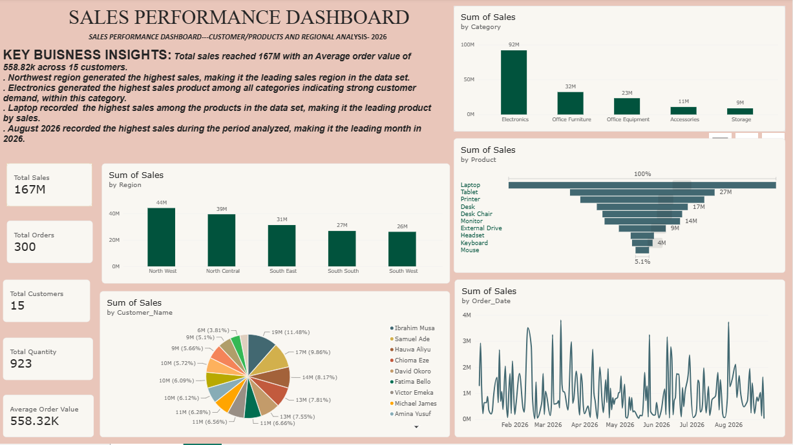

Power BI | SQL | Data Analysis | Data Visualization
I am an aspiring Data Analyst with an interest in transforming data into meaningful insights that support better decision-making. I am developing my skills in Power BI, SQL, data cleaning, data visualization, and DAX through practical projects.
This project analyzes sales performance using Power BI. The dashboard provides insights into sales, customers, products, regions, categories, and sales trends.

• Total sales reached approximately 167M.
• The dashboard compares sales performance across regions and categories.
• Customer and product performance can be explored interactively.
• Sales trends help identify changes in performance over time.
• Interactive filters allow users to explore specific categories and dates.
The dashboard presents key performance indicators and interactive visualizations to help understand sales performance across different regions, categories, customers, and products.